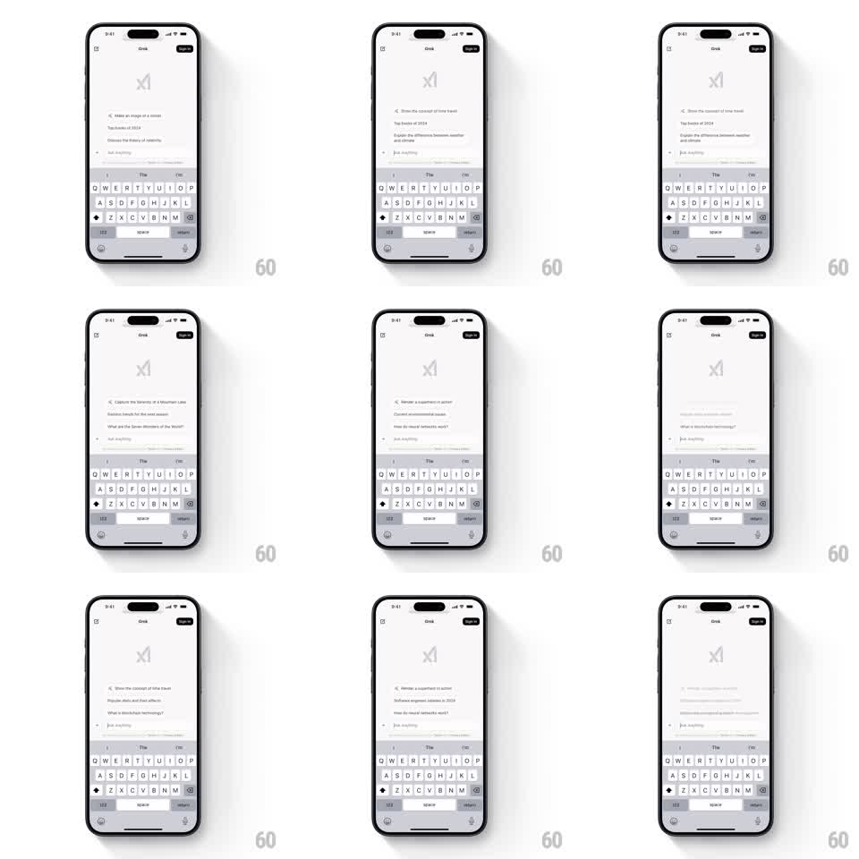

Media
Frame-by-frame

Rebuild this interaction 1:1: Grok's new-chat suggestions - the list of prompt ideas under the logo rotates on its own, each suggestion fading up into place and sliding out to make room for the next.

Rebuild this interaction 1:1: Grok's new-chat suggestions - the list of prompt ideas under the logo rotates on its own, each suggestion fading up into place and sliding out to make room for the next. ## Integration Integration: stack-agnostic spec - springs given as stiffness/damping, timed motions as duration + curve; map every value to your framework and animation library of choice. ## Scene Light Grok new-chat screen: centered logo, a short list of suggestion lines beneath it, an "Ask Anything" input with a plus button, and the system keyboard docked at the bottom. ## Motion spec Pattern: auto-rotating suggestion list, ~3s per rotation. - Three suggestion lines sit under the logo; each is a short prompt idea in muted text. - On each cycle, the top suggestion fades and slides up out of the list (300ms, ease-in), the remaining lines slide up one slot (300ms layout spring), and a fresh suggestion fades and rises into the bottom slot (300ms, 12px rise, ease-out). - The rotation runs continuously; tapping a suggestion dismisses the list upward (250ms) and places the text in the input. - The logo and input never move - only the suggestion slots cycle. ## Calibration - The exit, restack, and entry are sequential beats of one cycle; running them simultaneously reads as churn. - Text never overlaps mid-transition - each slot holds one fully formed line at a time. ## Reduced motion Suggestions crossfade in place. ## Don't miss - The list's vertical rhythm stays fixed - line height and spacing never shift as items rotate. - The incoming line starts faint, not transparent; a fully invisible start makes the slot read as empty space.